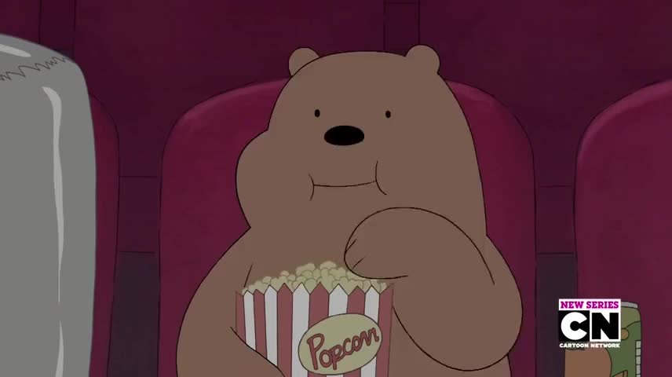
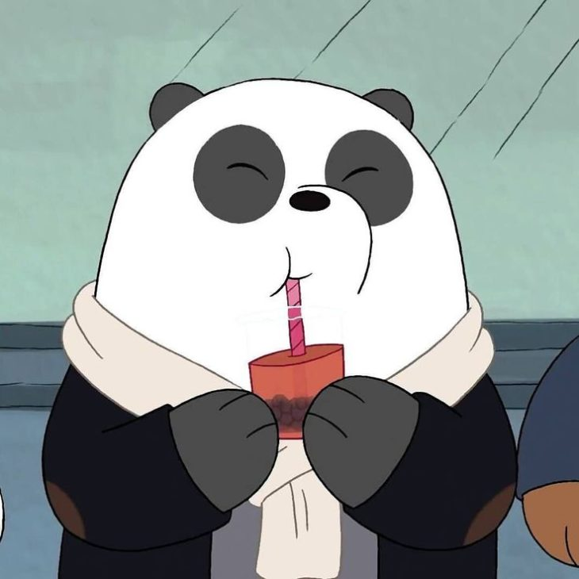

Сюжет мультсериала основывается на историях жизни трёх приёмных братьев-медведей: Гризли (Гриз), Пандой (Пан-Пан) и Белого. Они пытаются стать популярными среди людей и в Интернете — Панда ходит на свидание и ведёт собственный блог, а Гризли снимает фильмы. Однако это получается довольно неуклюже, но они не унывают и всегда поддерживают друг друга. У медведей есть свой уникальный способ передвижения — «пирамидой» друг на друге, как в цирке. Это своеобразная метафора их родственных отношений. Основное действие происходит в пещере в Сан-Франциско, в которой живут медведи, однако некоторые серии посвящены их детству и путешествиям.
|
|
 |  |
| Белый (Белый не боится никого кроме самого белого) | гризли (гриз) | панда (пан-пан) |